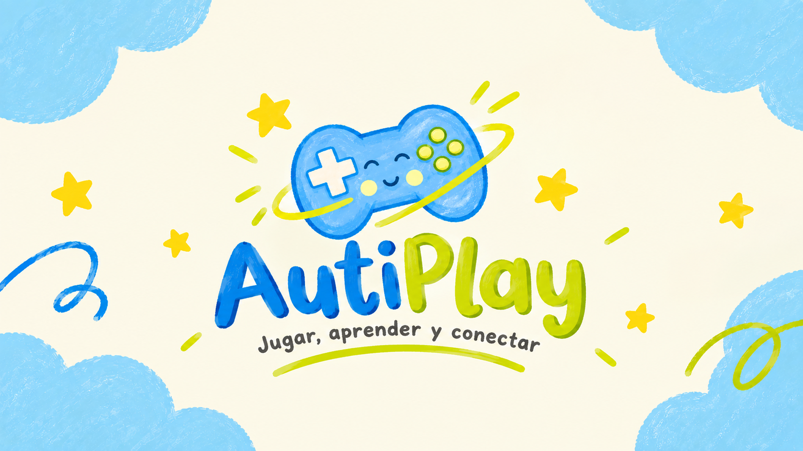

Rutina
Ordena acciones de la vida diaria para formar una secuencia con sentido.
SecuenciasConoce AutiPlay, un juego educativo con actividades visuales para practicar rutinas, asociación, memoria y trazado a tu propio ritmo.
Para jugar en casa o como apoyo en actividades educativas.

Actividades claras y visuales que invitan a observar, probar y volver a intentar.
Ordena acciones de la vida diaria para formar una secuencia con sentido.
SecuenciasRelaciona cada palabra con la imagen que corresponde trazando una línea.
Relacion palabra-imagenDescubre las tarjetas y encuentra las parejas de imágenes iguales.
Atencion y memoriaSigue un camino con el cursor desde el inicio hasta llegar a la meta.
Coordinacion visualAutiPlay es un recurso educativo pensado para niños con autismo nivel 1 y para las personas que los acompañan. Propone actividades visuales sencillas, con objetivos concretos y espacio para repetir los intentos.
Instrucciones visuales
La tarea se presenta de forma directa y comprensible.
Ritmo flexible
Se puede volver a intentar sin necesidad de apresurarse.
Opciones de visualización
Permite desactivar las nubes y las animaciones desde los ajustes.
AutiPlay es un recurso educativo; no es una herramienta de diagnóstico ni sustituye apoyos individualizados.
Selecciona la version adecuada para tu equipo.
Para computadores con Windows.
Archivo .exeEl archivo se habilitara cuando se agregue la versión final.
Para teléfonos y tabletas Android.
Archivo .apkEl archivo se habilitara cuando se agregue la versión final.
Estas son versiones preliminares. No descargues archivos que no procedan de una fuente de confianza.
Respuestas breves para preparar la instalación y el primer uso.
Cuando este disponible, descarga el instalador oficial de Windows y abre el archivo .exe. Si Windows muestra una advertencia de seguridad, verifica primero que el archivo proceda de la página oficial y que sea la versión esperada.
Cuando este disponible, descarga el archivo .apk en tu dispositivo y sigue las indicaciones de instalación de Android. Instala unicamente archivos que sepas que proceden del desarrollador.
No. Es un juego educativo con actividades visuales. Las necesidades y preferencias de cada niño son diferentes; las familias y los educadores pueden decidir como incorporarlo a sus actividades.
El juego incluye opciones para activar o desactivar las nubes de fondo y las animaciones de las actividades.
Si. El juego es gratuito y no incluye publicidad ni compras dentro de la aplicación.
Simplemente desinstala la version anterior y vuelve a instalar la versión actual.
Jugar, aprender y conectar con AutiPlay.